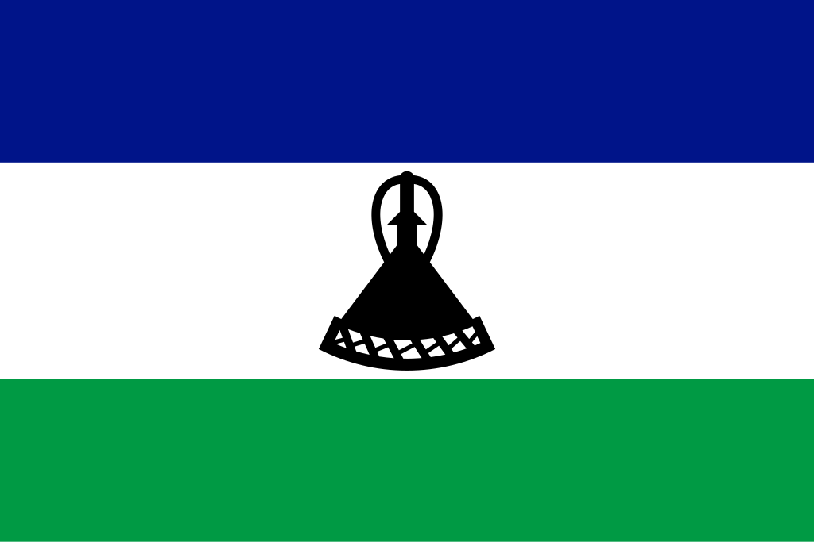

Lesoto
 O Lesoto, oficialmente Reino do Lesoto, é um pequeno país montanhoso localizado no sul da África, inteiramente rodeado pelo território da África do Sul, o que o torna um enclave. Com uma área de aproximadamente 30 mil km² e população de pouco mais de 2 milhões de habitantes, o Lesoto é conhecido como o “Reino nas Nuvens” devido à sua altitude média elevada, sendo um dos países mais altos do mundo. Sua capital é Maseru, situada próxima à fronteira com a África do Sul. A população é majoritariamente composta pelo povo basotho, que compartilha língua, tradições e identidade cultural comuns. O país conquistou sua independência do Reino Unido em 1966 e adota o sistema de monarquia constitucional, tendo o rei como símbolo de unidade nacional. Apesar de seu tamanho reduzido, o Lesoto se destaca pela sua geografia única, seus recursos hídricos importantes para a região e por manter uma identidade cultural forte e preservada, mesmo diante das pressões externas.
História
A história do Lesoto está profundamente ligada ao povo basotho e à luta pela preservação de sua identidade diante das invasões e do colonialismo. Originalmente habitada por povos san e depois por comunidades de agricultores e pastores, a região se consolidou como território basotho no início do século XIX, sob a liderança do rei Moshoeshoe I. Durante este período, o país sofreu ataques de povos vizinhos e do avanço colonial britânico e bôer, mas Moshoeshoe I demonstrou grande habilidade diplomática, unindo clãs dispersos e buscando alianças estratégicas para garantir a sobrevivência do reino. Para proteger sua terra das investidas dos colonos, em 1868 Moshoeshoe pediu proteção ao Reino Unido, transformando o território em protetorado britânico conhecido como Basutolândia.
A dominação britânica durou até 1966, quando o território conquistou sua independência e passou a se chamar Reino do Lesoto. Desde então, o país enfrentou desafios políticos, incluindo golpes de Estado, crises econômicas e tensões internas, mas manteve sua monarquia como símbolo de unidade nacional. Hoje, o Lesoto busca equilibrar tradição e modernidade, enfrentando problemas como desigualdade social, dependência econômica da África do Sul e questões de saúde pública, mas também se destaca por sua resiliência histórica e pela força de sua cultura basotho, que permanece como alicerce de sua identidade nacional.
Cultura
A cultura do Lesoto é marcada pela forte identidade do povo basotho, que preserva tradições ancestrais enquanto incorpora elementos da modernidade. A língua oficial e mais falada é o sesotho, acompanhado pelo inglês, usado em documentos oficiais e no ensino. As tradições culturais basotho são expressas por meio da música, dança, poesia oral e artesanato, sendo o chapéu mokorotlo e as mantas coloridas símbolos tradicionais da identidade nacional. A música tradicional é acompanhada por tambores e instrumentos de corda, e as danças coletivas celebram tanto eventos religiosos quanto rituais de colheita e festividades locais.
A religião predominante é o cristianismo, herdado do período colonial, mas práticas tradicionais ainda são mantidas em algumas comunidades. A gastronomia baseia-se em milho, sorgo e vegetais, com pratos típicos como o papa (mingau de milho) e o motoho (mingau de sorgo fermentado). O Lesoto também valoriza a arte do artesanato, como cestaria e cerâmica, além das canções populares que reforçam a memória histórica do povo. A cultura basotho é um elemento central da vida social e um motivo de orgulho, garantindo que a identidade do país permaneça viva mesmo diante da globalização e da forte influência da África do Sul.
Clima
O clima do Lesoto é subtropical de montanha, influenciado pela sua elevada altitude, que varia entre 1.400 e mais de 3.400 metros acima do nível do mar. O país apresenta verões quentes e úmidos, com chuvas concentradas entre outubro e abril, e invernos frios e secos, com ocorrência de neve nas áreas mais altas, especialmente nas montanhas Maloti. Essa característica torna o Lesoto um dos poucos países da África onde a neve é relativamente comum. As temperaturas podem variar bastante entre o dia e a noite, e a altitude também favorece a ocorrência de geadas em diferentes épocas do ano. O clima influencia diretamente a agricultura, que enfrenta desafios devido à erosão e à escassez de terras férteis, mas também favorece o potencial turístico, especialmente para esportes de inverno, como o esqui.
Biodiversidade
A biodiversidade do Lesoto é adaptada ao seu ambiente montanhoso, com paisagens de savanas de altitude, prados alpinos e vales férteis. O país é lar de diversas espécies de aves, incluindo a águia-negra-africana e o grou-carunculado, além de pequenos mamíferos, répteis e anfíbios. As montanhas Maloti abrigam flora endêmica adaptada ao frio, como plantas medicinais e flores silvestres resistentes às geadas. Apesar de seu território pequeno, o Lesoto possui áreas de conservação, como o Parque Nacional Sehlabathebe, classificado como Patrimônio Mundial da UNESCO, que protege ecossistemas únicos e espécies raras.
No entanto, o país enfrenta sérios desafios ambientais, como erosão do solo, desmatamento e degradação das terras agrícolas, que afetam tanto a biodiversidade quanto a subsistência da população. Programas de reflorestamento e preservação ambiental têm sido implementados para mitigar esses impactos e garantir a conservação do patrimônio natural, essencial para o equilíbrio ecológico e para o turismo sustentável.


Cidades
As cidades do Lesoto refletem a combinação de urbanização em crescimento e preservação de tradições locais. A capital Maseru é a maior e mais importante cidade do país, localizada na fronteira com a África do Sul, sendo o principal centro político, econômico e cultural. A cidade conta com infraestrutura moderna, comércio dinâmico e representa o elo principal entre o Lesoto e a África do Sul. Outras cidades importantes incluem Teyateyaneng, conhecida por sua produção de artesanato tradicional, e Hlotse, que serve como centro agrícola e comercial.
As duas maiores cidades do Lesoto são Maseru e Teyateyaneng. Maseru concentra a maior parte das atividades administrativas, comerciais e industriais, além de abrigar universidades e centros culturais. Já Teyateyaneng, localizada na região montanhosa, é conhecida como um polo de identidade cultural basotho, sendo famosa pela produção de mantas tradicionais e outros produtos artesanais. Essas cidades, apesar de pequenas em comparação com grandes centros africanos, são fundamentais para a organização política, econômica e cultural do Lesoto, garantindo o equilíbrio entre tradição e modernidade.